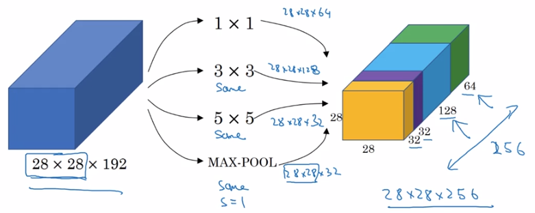
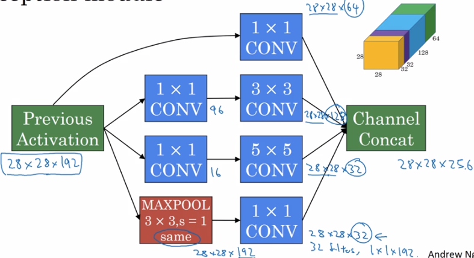
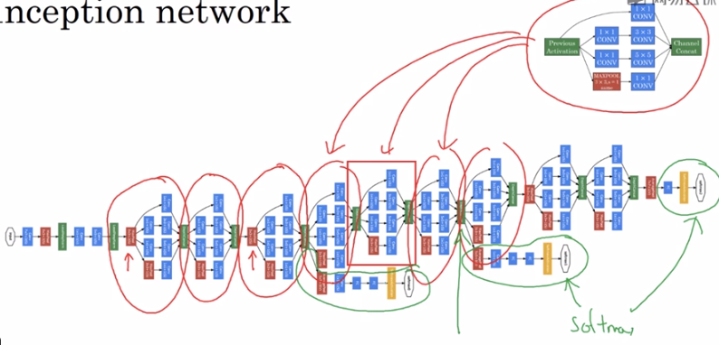

Szegedy. et. al., 2014. Going deeper with convolutions
Inception网络代替人工来确定卷积层中的过滤类型。或是决定是否需要创建卷积层或池化层。
1. Inception网络的原理
1.1. 多种参数的组合

Inception网络不需要人为地决定使用哪个过滤器，或是否需要池化，而是由网络自行确定这些参数。
即：给网络添加这些参数的所有可能，然后把这些输出连结起来，让网络自己学习它需要怎样的参数，采用哪些过滤器的组合。
1.2. 使用1*1卷积降低计算成本
1.2.1. 未降低的计算成本
例如： ，使用相同卷积，f=5,c=32，得到，计算量（不是参数个数）为：
output中的点的个数 = 28 28 32
每个点计算一次filter = 5 5 192
一共需要约120M次乘法
1.2.2. 改进的计算成本
，使用1*1卷积，c=16，得到
，使用相同卷积，f=5,c=32，得到
第一次卷积的计算量约为，第二次卷积的计算量约为。
最后实现同的目标，这种方法只需要约12.4M次，为原来的十分之一。
例子中的称为瓶颈层。
只要合理构建瓶颈层，既可以显著缩小表示层规模，又不会降低网络性能，从而节省大量计算。
1.3. Inception模块

图中2、3、4行的1*1卷积是为了通过构建瓶颈层缩小网络规模。
2. Inception网络

图中画红圈的都是Inception模块。
画绿圈的部分为基于隐藏层结果的输出。
多个输出是为了确保：隐藏层既用于特征计算，也用于预测结果。